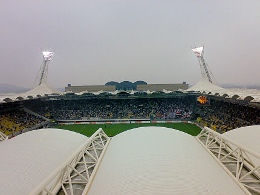

|
Roda JC - Ajax (2-0) 17 september 2006
|

Wat een timing... verjaren bij Roda-Ajax. Dank aan alle voetbalvrienden die
Z16-12-1 tot 't sjunste op de welt toverden !!!
Ook Ralph en Danniëlle waren een beetje jarig.

Ondanks het vroege aanvangstijdstip van de wedstrijd brandden de
stadionlampen. Het was iets mistig en enkele graden kouder dan in de rest
van het land.
Er wordt steeds minder overheidsgeld verkwist aan overbodige politie en ME.
Het volle gastenvak.
Sfeeractie met confetti-kanonnen.
Hierdoor waren de spelers tijdelijk niet zichtbaar.
De wedstrijd moet nog beginnen maar nu al hebben de Ajax-supporters
heimwee naar huis.
De west-zijde was compleet uitverkocht.
Ook in het Ajax-vak veel creativiteit.
Enkele pesterijen....
Vrijetrap Ramzi....

...bereikt De Fauw die 1-0 binnenschiet, (9').
De feestvarkens in Z16 beleven een mooie dag!
Roda was tot tien minuten voor rust de heersende ploeg. Ajax was veel te
slap voor het zeer gedreven en frisse Roda.
Sneijder schiet op de paal, een van de weinige kansen van Ajax.
Prima tackle op de bal door De Fauw.
De druk van Ajax nam toe wat deze informant naar de hot-line met Huub
deed grijpen.
De Belgische scheidsrechter De Bleeckere deelde de nodige kaarten uit.
Hier is er een gele kaart voor Huntelaar.
Smerige overtreding van Lindenbergh op Vandamme. De Ajacied krijgt
vreemd genoeg geen rood maar slechts geel.
Heitinga gaat nog even de bijdehante spelen.
Een snel genomen vrijetrap van Bodor wordt door Oper in het Ajax-doel
geschoven: 2-0, (64').
Swingende mensen in Z16.
De druk van Ajax werd groter maar naarmate de wedstrijd vorderde werd
duidelijk dat er voor Ajax niks te halen was. Huub Stevens bracht nog een
aantal wisselspelers: Lachambre, Senden en Van Tornhout voor
respectievelijk Bodor, De Fauw en Vandamme.
De wedstrijd is bijna afgelopen.
Vergeleken bij de vorige wedstrijd tegen Twente speelde Roda met 200%
meer intellect. Kujovic keepte overigens een fantastische wedstrijd.
Feest bij de spelers.
Kah geeft dansles aan Agustien.
Dit is altijd weer een mooi moment!
Blijde mensen op west.
Diverse spelers in de Kickoff. Wie is dit??? De Jong???
Cissé, niet gespeeld, toch in de picture met het helmpje....
Geen helmpje maar een hoedje. Roda bedankt voor dit verjaardagskado!
Hey stoere meiden, dat wordt maandag een chille dag op school :-))))
Na ruime tijd in de Kickoff verpoosd te hebben gaan deze dames hevig aan
de zoetwaren. Waarom?

Ach ja, Bube gaat verjaren. Behalve een setje knuffels krijgt hij een puntzak
met gele en zwarte lekkernijen. Nadat alle wedstrijden gespeeld zijn blijkt
dat Roda op een gedeelde eerste
plaats staat, samen met FC Groningen en AZ. Omdat de volgende wedstrijd
tegen AZ is mag dit als een top-ontmoeting aangemerkt worden! Kijk voor
een foto-reportage van Ajax-zijde op
REMEPRO
© Koempels Pleasure Dome
|